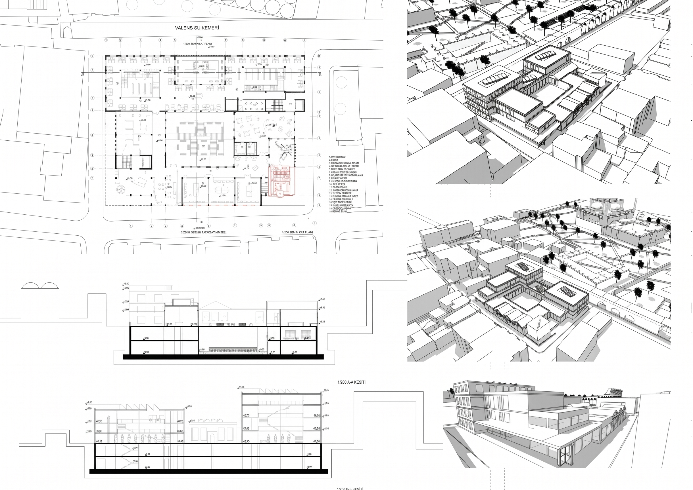

01 / ARCHITECTURAL
Suriçi Şehir Kütüphanesi

PROJE KÜNYESİ
- Proje: Suriçi Şehir Kütüphanesi
- Konum: İstanbul
- Açıklama: Vefa’nın tarihî dokusu içerisinde konumlanan şehir kütüphanesi projesi, Recaizade Sıbyan Mektebi, Valens Su Kemeri ve Şehzade Camii ile kurduğu ilişkiler üzerinden geçmiş ile günümüz arasında bir bağ kurmayı amaçlıyor. Kütüphane, okuma ve araştırma alanlarının yanı sıra çocuk kütüphanesi, atölyeler ve sosyal alanlarla mahalle yaşamını destekleyen kamusal bir buluşma noktası olarak tasarlandı.
- Yıl: 2024